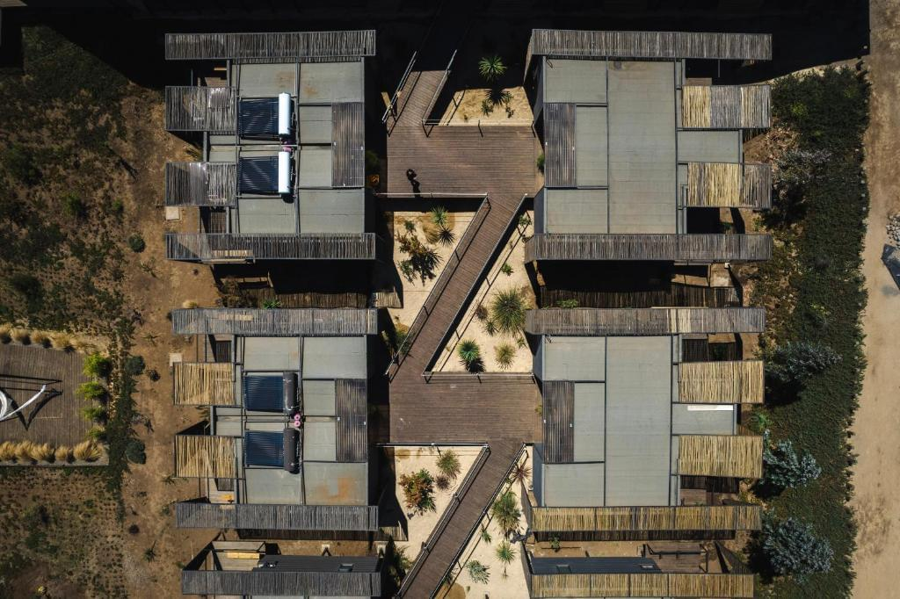
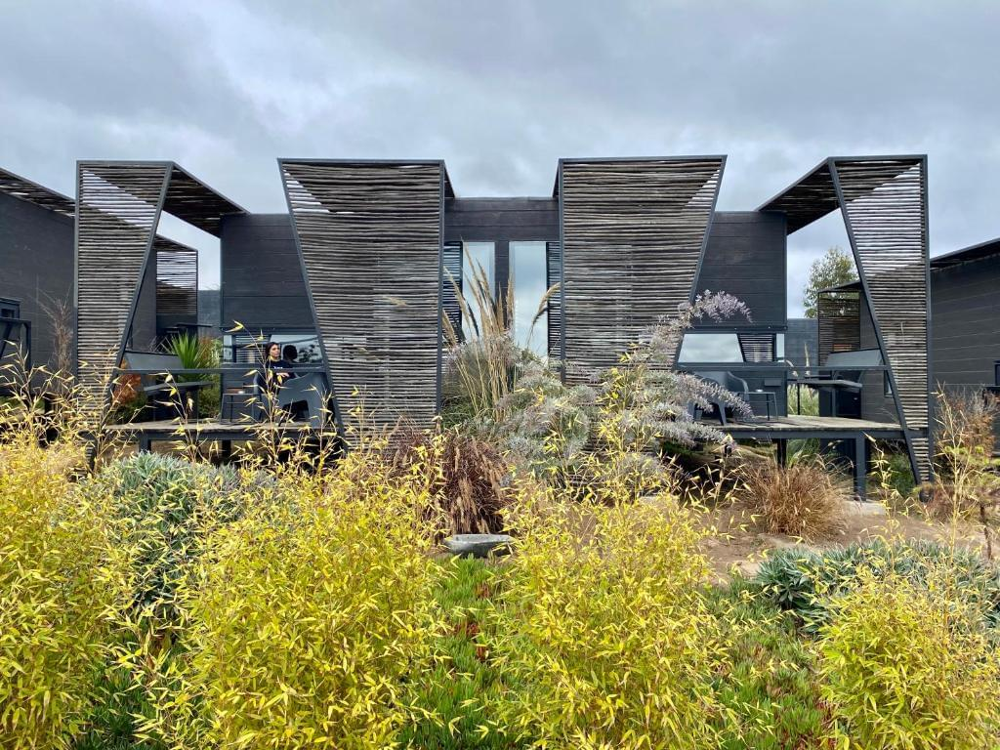
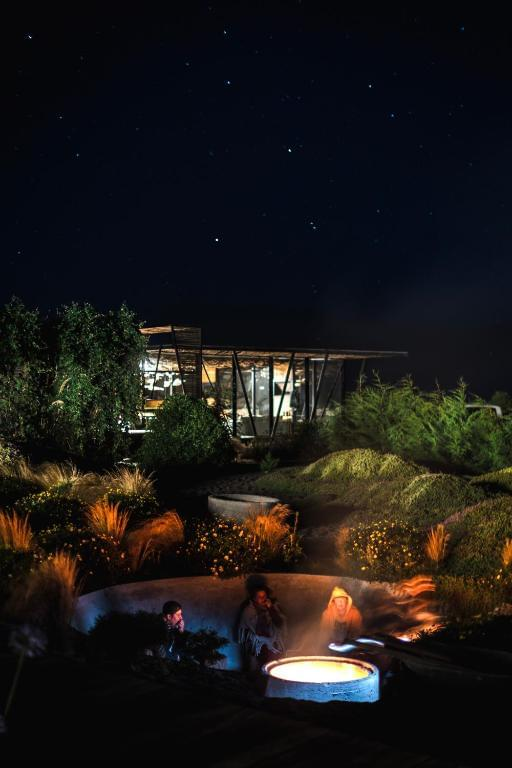
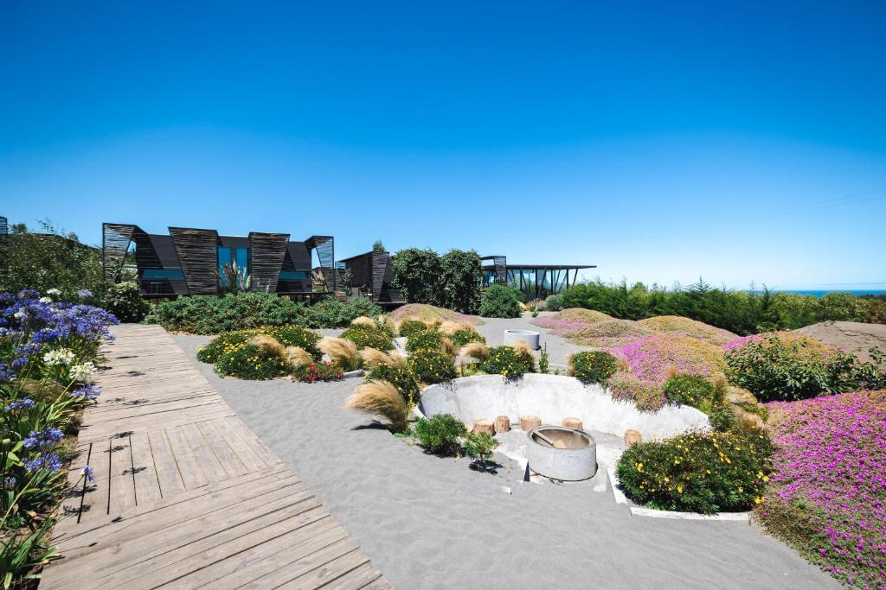
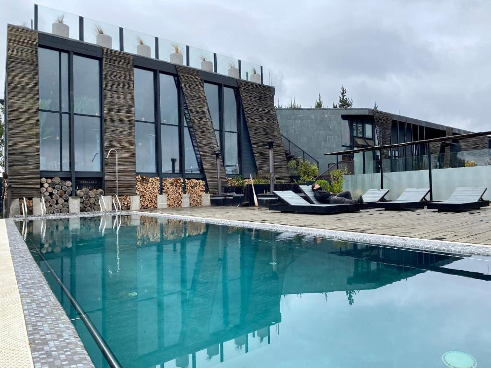
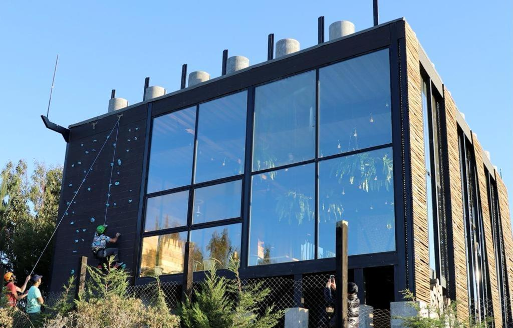

Nuestros juegos están destinados a un público ADULTO mayor de 18 años. Haz clic en Aceptado para confirmar tu edad.
Taka Matanzas
Taka Matanzas es un lujoso establecimiento situado en primera línea de playa en Matanzas, Chile, que ofrece una serena escapada a los viajeros que buscan relajación y aventura. Situado a sólo 700 metros de la playa Matanzas Norte, este exquisito hotel cuenta con una serie de instalaciones para garantizar unas vacaciones inolvidables.
Comience el día con un delicioso desayuno continental servido por el hotel. Para otras opciones gastronómicas, puede explorar los restaurantes cercanos o aprovechar el servicio de habitaciones.
El hotel ofrece una amplia terraza donde podrá relajarse mientras disfruta de las impresionantes vistas de los alrededores. También hay un salón compartido donde podrá socializar con otros huéspedes.
Confort
El hotel ofrece habitaciones y suites bien equipadas y cuidadosamente diseñadas. Los huéspedes pueden esperar un ambiente espacioso y elegante con mobiliario moderno. Algunas habitaciones disponen incluso de cocina totalmente equipada, ideal para quienes prefieran cocinar por su cuenta.

El Hotel Taka Matanzas ofrece a sus huéspedes una gran variedad de actividades de ocio y recreo. Podrá darse un baño en la piscina al aire libre, relajarse en la bañera de hidromasaje o jugar una partida de billar o dardos. Para los que quieran mantenerse activos durante su estancia, el hotel también cuenta con un gimnasio.

Servicios prácticos
Las familias que viajen con niños apreciarán el parque infantil del hotel, que ofrece actividades seguras y divertidas para los más pequeños.
El Taka Matanzas ofrece varios servicios prácticos, como recepción 24 horas, traslados al aeropuerto y conexión WiFi gratuita en todo el establecimiento. Las habitaciones incluyen ropa de cama y toallas, lo que garantiza una estancia sin complicaciones.

Atracciones



La ubicación privilegiada del hotel permite acceder fácilmente a lugares de interés como la playa de Las Brisas, la playa de Matanzas y Roca Cuadrada. El Aeropuerto Internacional de Santiago es el aeropuerto más cercano, a unos 161 kilómetros de distancia, por lo que su viaje hacia y desde el hotel es conveniente.
Taka Matanzas es el destino perfecto para los viajeros que buscan escapar del ajetreo y el bullicio de la vida cotidiana y sumergirse en la belleza natural y la tranquilidad de Matanzas, Chile. Ya sea que busque relajación, aventura o un poco de ambas, este refugio de 5 estrellas tiene algo para todos.